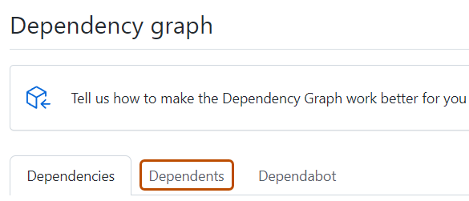

You can use the dependency graph to see the packages your project depends on. In addition, you can see any vulnerabilities detected in its dependencies.
Viewing the dependency graph
The dependency graph shows the dependencies and dependents of your repository. For each dependency, you can see the version, license information, the manifest file which included it, and whether it has known vulnerabilities. For package ecosystems supporting transitive dependencies, the relationship status will be displayed and you can click "", then "Show paths", to see the transitive path which brought in the dependency.
You can also search for a specific dependency using the search bar. Dependencies are sorted automatically with vulnerable packages at the top. For information about the detection of dependencies and which ecosystems are supported, see Dependency graph supported package ecosystems.
On GitHub, navigate to the main page of the repository.
Under your repository name, click Insights.
In the left sidebar, click Dependency graph.
Optionally, use the search bar to find a specific dependency or set of dependencies. You can use the keywords ecosystem: to show only packages of a certain type, or relationship: to show only direct or transitive dependencies (if the ecosystem supports transitivity). Plain words in search bar will only match package names.
Optionally, to view the repositories and packages that depend on your repository, under "Dependency graph", click Dependents.

Note
GitHub currently only determines dependents for public repositories.
Dependencies view
For each dependency, you can see its ecosystem, the manifest file in which it was found, and its license (where detected).
Dependencies for private repositories, private packages, or unrecognized files are shown in plain text.
If the package manager for the dependency is in a public repository, you can hover on the dependency name to display a pop-up with the associated repository information.
You can sort and filter dependencies by typing filters as key:value pairs into the search bar.
Use ecosystem: <ecosystem-name> to display dependencies for the selected ecosystem.
Use relationship: to filter the list by relationship status. Possible values are direct, transitive, and inconclusive. Alternatively, you can click the relationship label adjacent to a dependency name to only show dependencies of the same relationship status. This filter is only available for ecosystems with transitive dependency support. See Dependency graph supported package ecosystems for more information.
Dependencies submitted to a project using the dependency submission API will show which detector was used for their submission and when they were submitted. For more information on using the dependency submission API, see Using the dependency submission API.
If vulnerabilities have been detected in the repository, these are shown at the top of the view for users with access to Dependabot alerts.
Dependents view
For public repositories, the dependents view shows how the repository is used by other repositories. To show only the repositories that contain a library in a package manager, click NUMBER Packages immediately above the list of dependent repositories. The dependent counts are approximate and may not always match the dependents listed.